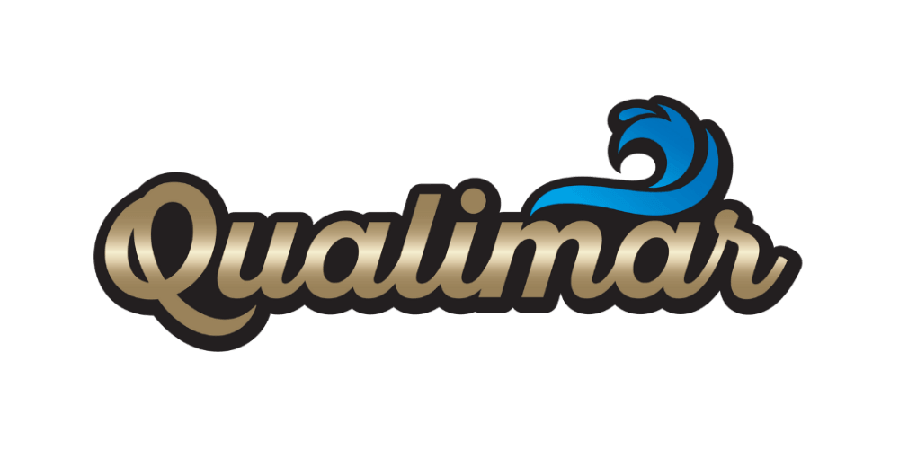

Como a FCAP JR. otimizou 129 processos da Qualimar e trouxe mais eficiência e continuidade à operação
Agendar diagnóstico gratuito
Através do Mapeamento de Processos e da criação de documentos operacionais, a FCAP Jr. trouxe clareza, padronização e escalabilidade para uma consultoria referência no mercado de carreiras e transição profissional.
O Desafio: Sobrecarga e falta de padronização nas rotinas críticas
A Murta Consultoria é uma empresa especializada em processos de recolocação e planejamento de carreira. Apesar de já atuar com clientes e métodos estruturados, a empresa enfrentava dificuldades como:
Nossa Abordagem
Para transformar a operação da Qualimar, a FCAP JR. aplicou um mapeamento completo de processos, priorizou gargalos com ferramentas analíticas e redesenhou fluxos com base em eficiência.
Diagnóstico e Imersão
Coletas com os colaboradores para mapear com fidelidade a forma atual dos processos (AS IS)
Análise de Gargalos
Utilização de ferramentas como Ishikawa e Matriz GUT para identificar os principais entraves operacionais
Redesenho de Processos
Criação de novos fluxos otimizados validados com o cliente e orientados para maior eficiência
Documentação e POPs
Padronização dos processos em documentos claros e acessíveis aos times, como Procedimentos Operacionais Padrão
Resultados alcançados: Processos mais claros, divisão de responsabilidades e menos riscos
- ✔Padronização de 129 processos com documentação clara
- ✔Redução de perdas de conhecimento e tempo em afastamentos
- ✔Criação de novo cargo e divisão equilibrada de tarefas
- ✔Mais precisão e frequência na execução de processos críticos
- ✔Continuidade operacional garantida mesmo em mudanças de equipe
“O projeto da FCAP JR. trouxe um impacto significativo na nossa operação. Conseguimos padronizar rotinas e garantir que mesmo com mudanças na equipe, a produtividade se mantenha.”